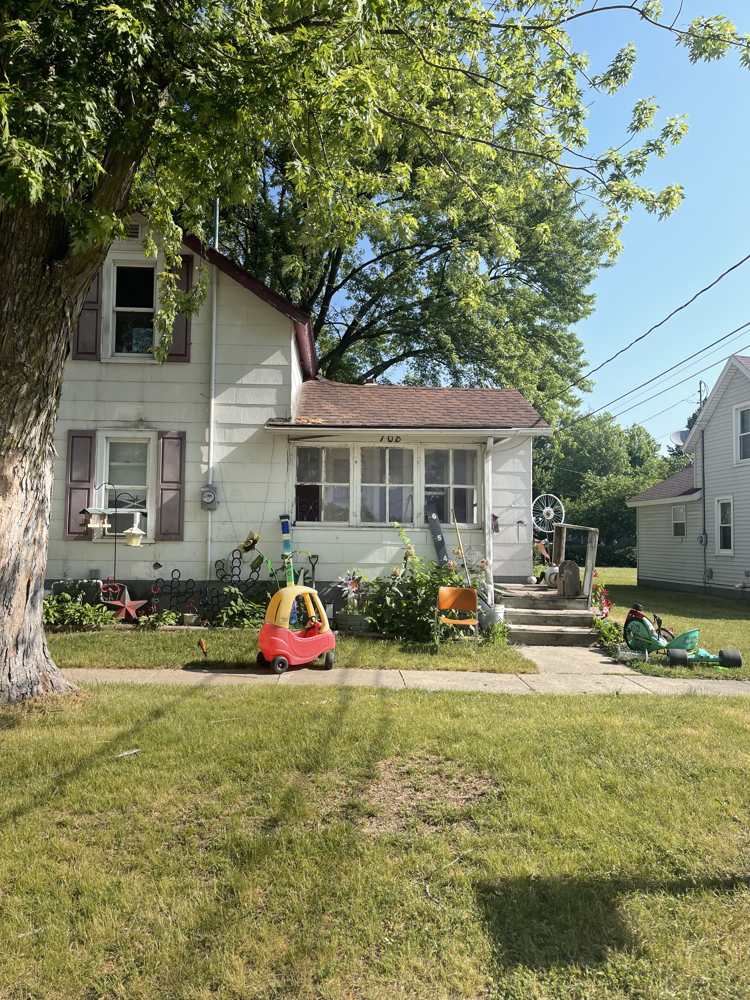
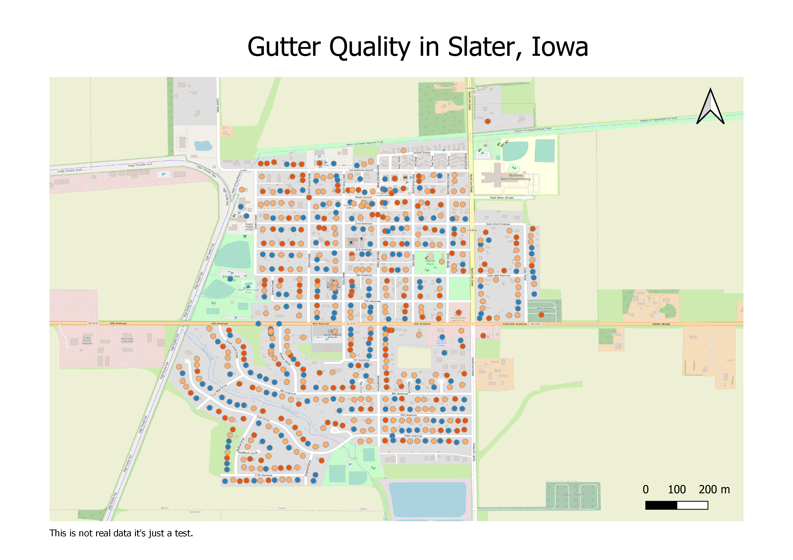

Housing Team Week 6 Wrap-Up
WinVEST Project

On Monday and Tuesday of week six, the DSPG team traveled to Grundy Center, New Hampton and Independence, Iowa. In groups of 3-4 people, we walked around residential areas and observed the condition of houses and lots. The Fulcrum app was used to record observations. We assigned good, fair and poor ratings to attributes such as:
Roof
Gutter
Landscape
Siding
Sidewalk to the house
We also noted whether there was junk or obstructions on the property and took photos of the houses.

While in residential neighborhoods, we also gave general impressions of blocks by observing presence and quality of:
Neighborhood sidewalks
Street lights
Way-finding signs
Storm drainage systems
Curb cuts
Street trees

Demographic Profiles
One of the goals of the project has been to provide demographic profiles of the three cities focused on for the WinVEST project : Independence, New Hampton and Grundy Center. We want to show characteristics related to income and population, and how these characteristics have been changing through the years or how they are expected to change in the future. Several graphs were made in R to show these three cities’ economic and population backgrounds.


Mapping
To visualize addresses for the WinVEST cities and Slater, first we need to geocode them (get a latitude and longitude for each address). This was done using R. Base code was from storybench.
Addresses are plotted in QGIS using the coordinates. There are some addresses that are not in the correct place. For example, there is a point in Marion, which is in Linn County. This point is supposed to be located in Independence, IA. This is something to look into next week.

Preparing to map AI-based data
With the coordinates for Slater and a new field with “Good”, “Fair”, and “Poor” assigned randomly to each address, a sample map was created in which gutter quality for houses in the city are shown. In time, we hope to use maps to display well-trained AI model ratings for landscapes, siding, gutters etc. This will allow us and our clients to visualize where better quality homes are vs lower quality.
